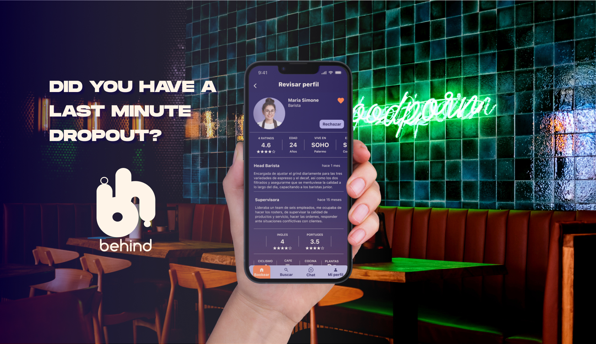
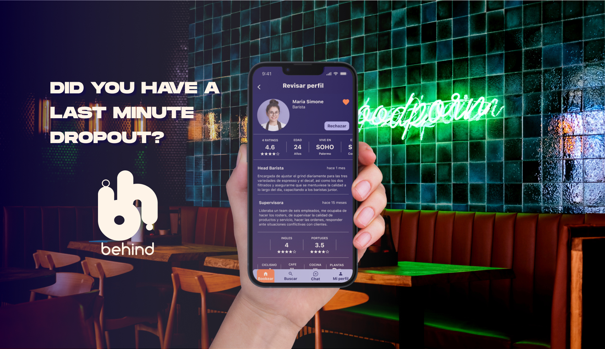

PROPOSAL FOR REBUILDING THE NEW YORK FASHION WEEK WEBSITE
IMG APPROACHED DEWYNTERS WITH AN RFP FOR A NEW WORLD-CLASS WEBSITE THAT WILL EXPERTLY INTRODUCE, EDUCATE AND CONVERT ONLINE AUDIENCES.
“THE WEBSITE MUST BE A FLEXIBLE TOOL THAT ADOPTS A FUTURE-PROOF DESIGN/DEVELOPMENT APPROACH AND IT MUST BE REUSABLE AND FIT-FOR-PURPOSE FOR A MINIMUM OF 3 YEARS (6 FASHION WEEKS) FROM THE POINT OF DELIVERY.”
This was my first project when I started in the agency and we were on a 48hs deadline. From the thorough brief we were provided, I came up with a hierarchy of relevant information and bulleit points to focus given we had such a short time to develop the prototype.


 
